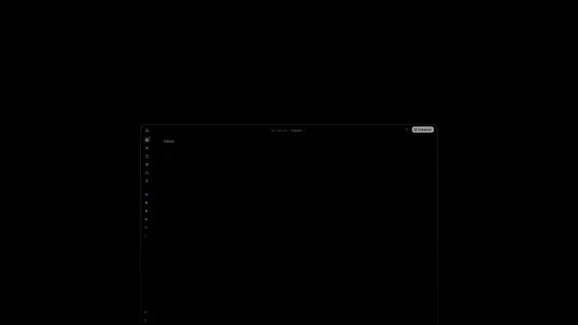
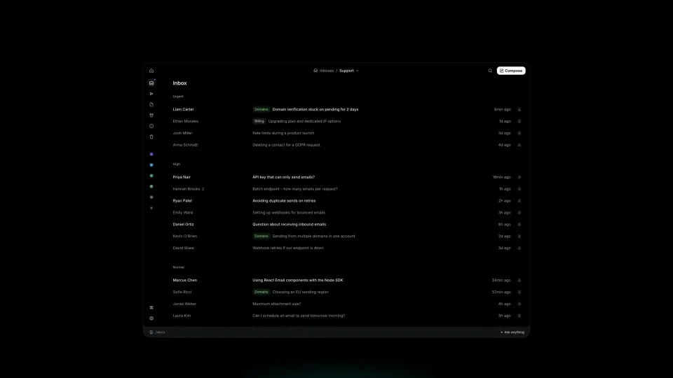
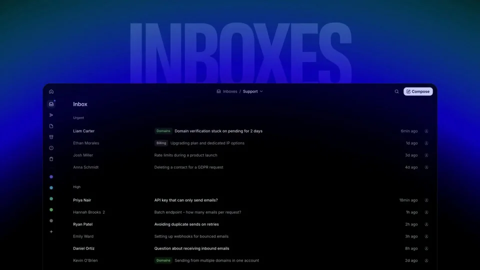
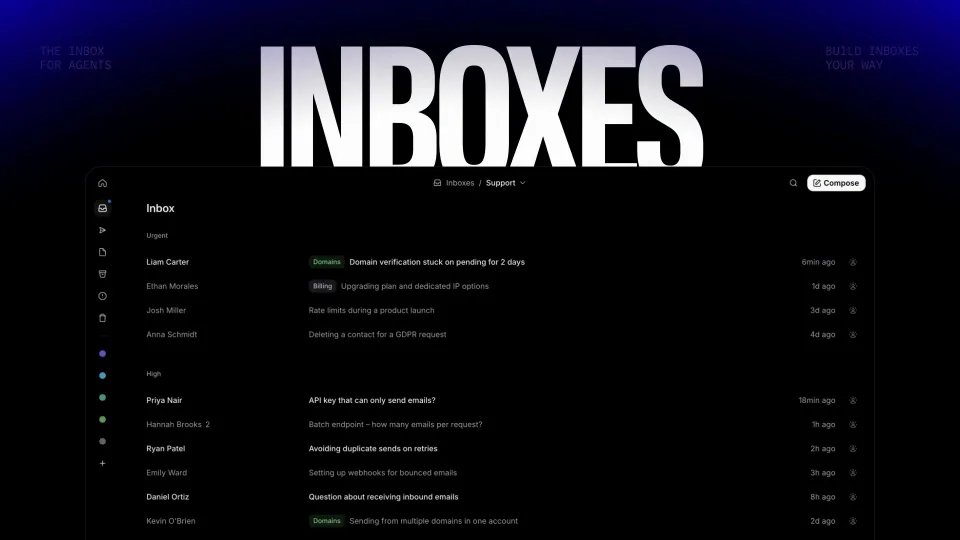
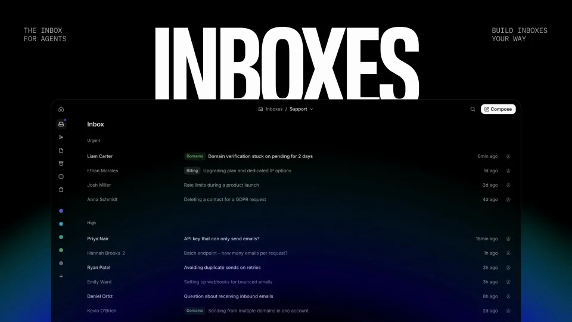

Resend / V204
Resend Inboxes
把一个安静的深色收件箱推到前景，再用巨大标题与背光完成发布揭示。
构图与编排 可播放 · 可替换内容
整体编排规则示例
查看 HTML 源码
<!doctype html><html lang="zh-CN"><meta charset="utf-8"><meta name="viewport" content="width=device-width,initial-scale=1"><title>Resend Inboxes · sequence</title><style>html,body{margin:0;width:100%;height:100%;overflow:hidden;background:#020404}canvas{display:block;width:100%;height:100%;object-fit:contain}</style><body data-mode="sequence"><canvas width="1000" height="600"></canvas><script src="data.js"></script><script src="common.js"></script><script src="scene.js"></script><script src="bridge.js"></script></body></html>画面元素收件箱窗口巨型标题蓝青光晕邮件行
MOTION LANGUAGE
动作与构图
局部动作 · 构图规则
01
窗口扩大但保留列表秩序
窗口扩大但保留列表秩序规则示例
查看 HTML 源码
<!doctype html><html lang="zh-CN"><meta charset="utf-8"><meta name="viewport" content="width=device-width,initial-scale=1"><title>Resend Inboxes · sequence</title><style>html,body{margin:0;width:100%;height:100%;overflow:hidden;background:#020404}canvas{display:block;width:100%;height:100%;object-fit:contain}</style><body data-mode="clip" data-start="1" data-end="5.5"><canvas width="1000" height="600"></canvas><script src="data.js"></script><script src="common.js"></script><script src="scene.js"></script><script src="bridge.js"></script></body></html>收件箱从远处进入并占据下半画面，侧栏、邮件行和右上操作保持同一坐标关系。镜头的推进先于标题，让功能界面先建立存在感。
02
标题从窗口背后升起
标题位于窗口之后、光晕之前，出现后稳定在上半区。黑底与蓝青背光衬托白色窄体大写字，界面小字仅承担质感，不与发布名称争抢。
03
换名称和列表，保留层次
可改成其他列表型产品发布。替换主标题、邮件或任务内容、侧栏与按钮；保持“大标题在后、产品窗口在前、光晕在底”的三层关系。
SEQUENCE
段落与节奏
点击段落，定位到上方编排示意。





画面参考 · 离散静帧
KEEP THE RELATIONSHIPS
制作其他主题
- 可改成其他列表型产品发布。替换主标题、邮件或任务内容、侧栏与按钮；保持“大标题在后、产品窗口在前、光晕在底”的三层关系。
制作约束
收件箱窗口 / 巨型标题 / 蓝青光晕 / 邮件行
- 把一个安静的深色收件箱推到前景，再用巨大标题与背光完成发布揭示。
- 收件箱从远处进入并占据下半画面，侧栏、邮件行和右上操作保持同一坐标关系。镜头的推进先于标题，让功能界面先建立存在感。
- 标题位于窗口之后、光晕之前，出现后稳定在上半区。黑底与蓝青背光衬托白色窄体大写字，界面小字仅承担质感，不与发布名称争抢。